<title>Intern Christmas Hats</title>
<link rel="stylesheet" href="https://fonts.googleapis.com/css2?family=Bricolage+Grotesque:wght@600;700&family=Figtree:wght@400;500&display=swap">
<style>
/* Layout: one column of rounds, newest first; each round is a 4-up grid of square photo cards */
:root{--bg:#f4f2ef;--fg:#1c1b1f;--muted:#68646d;--card:#ffffff;--line:#e2dee6;--flaw:#a3321f;--chosen:#1f6b45;--chosen-fg:#ffffff;
--display:"Bricolage Grotesque",system-ui,sans-serif;--body:"Figtree",system-ui,sans-serif}
@media (prefers-color-scheme:dark){:root:not([data-theme="light"]){--bg:#141316;--fg:#efedf2;--muted:#a19ca8;--card:#1e1d21;--line:#322f37;--flaw:#f08a74;--chosen:#6fd3a0;--chosen-fg:#0e1f16;color-scheme:dark}}
:root[data-theme="dark"]{--bg:#141316;--fg:#efedf2;--muted:#a19ca8;--card:#1e1d21;--line:#322f37;--flaw:#f08a74;--chosen:#6fd3a0;--chosen-fg:#0e1f16;color-scheme:dark}
body{background:var(--bg);color:var(--fg);font:15px/1.5 var(--body)}
main{max-width:1240px;margin:0 auto;padding-block:28px 48px;padding-inline:16px;display:grid;gap:36px}
header h1{font:700 28px/1.15 var(--display);margin:0;text-wrap:balance}
header p{color:var(--muted);margin:6px 0 0;max-width:65ch}
section{display:grid;gap:14px}
h2{font:600 18px/1.3 var(--display);margin:0}
h2 small{font:400 14px var(--body);color:var(--muted);margin-left:8px}
.grid{display:grid;grid-template-columns:repeat(auto-fill,minmax(250px,1fr));gap:14px}
figure{margin:0;background:var(--card);border:1px solid var(--line);border-radius:10px;overflow:hidden;display:flex;flex-direction:column}
figure img{width:100%;max-width:100%;aspect-ratio:1;object-fit:cover;display:block}
figcaption{padding:10px 12px 12px;display:grid;gap:2px;min-width:0}
figcaption b{font:600 15px var(--display)}
figcaption span{color:var(--muted);font-size:13.5px}
figcaption .sz{font-size:12px;letter-spacing:.02em}
figcaption .flaw{color:var(--flaw)}
.rec{justify-self:start;font:600 11.5px var(--body);letter-spacing:.04em;text-transform:uppercase;color:var(--chosen-fg);background:var(--chosen);padding:2px 8px;border-radius:99px}
figure.chosen{border-color:var(--chosen)}
</style>
<main>
<header><h1>Mũ Giáng sinh cho Intern</h1>
<p>Mũ đội lệch trên chóp đèn (kim tự tháp đáy 35 mm, cao 32 mm), để một phần đèn vẫn sáng và không che nút. Vòng mới nhất ở trên cùng.</p></header>
<section><h2>Vòng 4: mũ Noel truyền thống + chi tiết tech <small>T1–T8</small></h2><div class="grid">
<figure>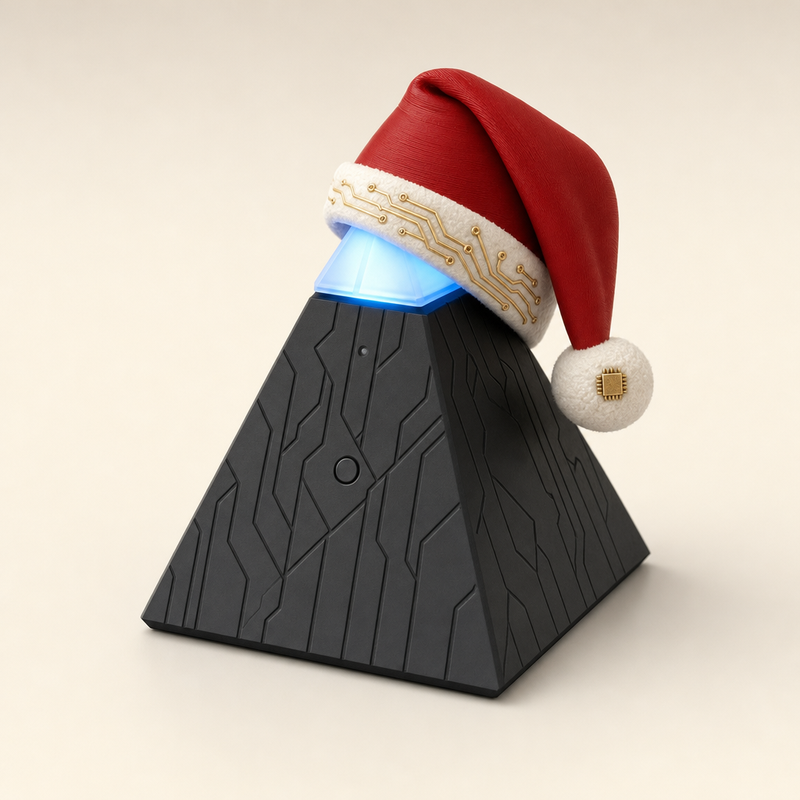<figcaption><b>T1 Circuit Band</b><span class="sz">Mũ cho chóp đáy 35 mm, cao ~30–45 mm</span><span>Viền lông trắng có đường mạch vàng nổi, quả bông là con chip vàng nhỏ</span></figcaption></figure>
<figure>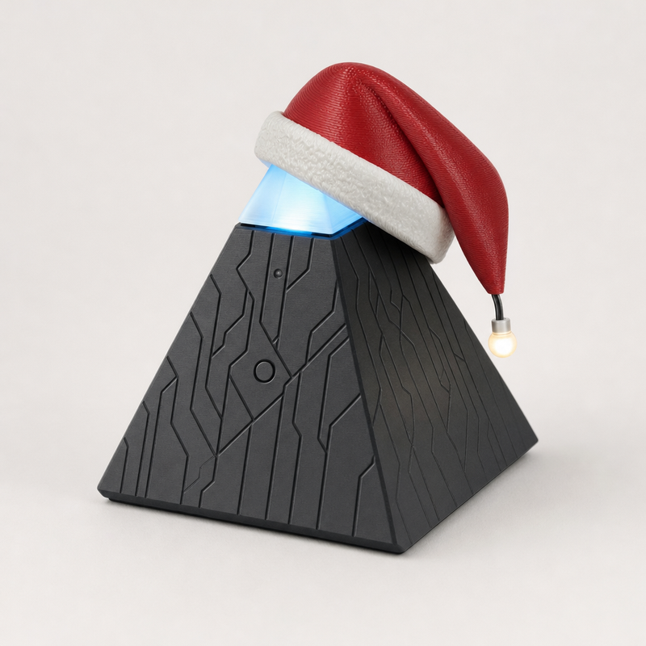<figcaption><b>T2 LED Pompom</b><span class="sz">Mũ cho chóp đáy 35 mm, cao ~30–45 mm</span><span>Quả bông thay bằng bóng LED nhỏ có chân dây</span><span class="flaw">Lỗi ảnh: bóng LED khá nhỏ</span></figcaption></figure>
<figure>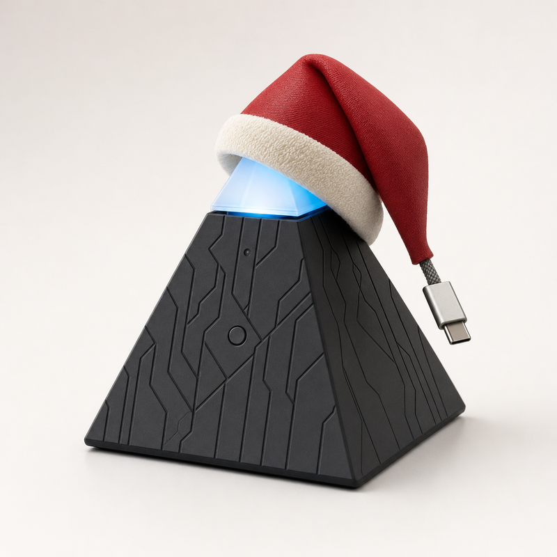<figcaption><b>T3 USB-C Tip</b><span class="sz">Mũ cho chóp đáy 35 mm, cao ~30–45 mm</span><span>Đuôi mũ kết thúc bằng đầu cắm USB-C thay cho quả bông</span></figcaption></figure>
<figure>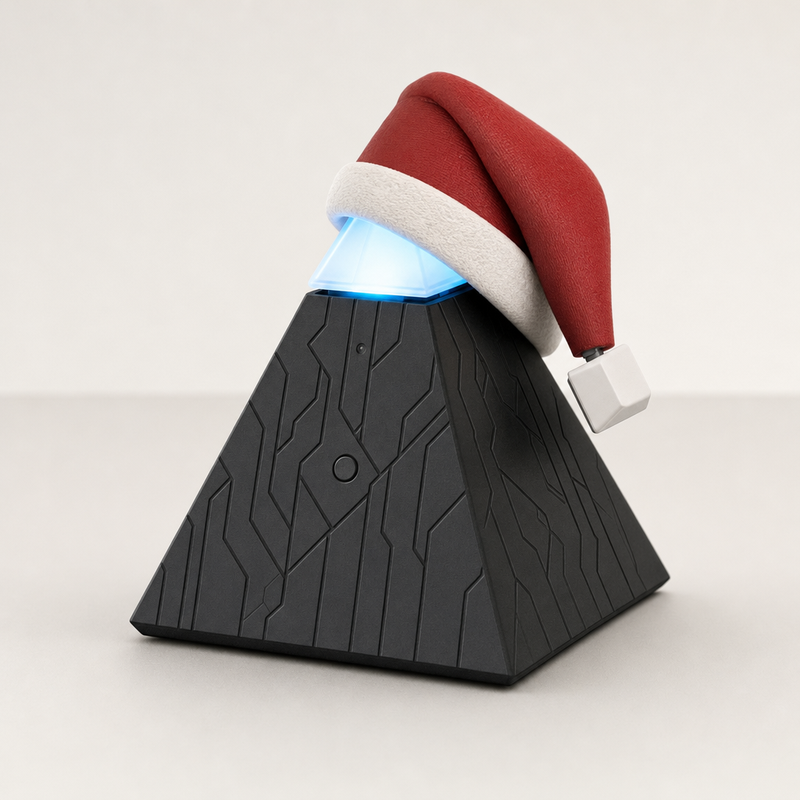<figcaption><b>T4 Keycap Pompom</b><span class="sz">Mũ cho chóp đáy 35 mm, cao ~30–45 mm</span><span>Quả bông thay bằng một keycap bàn phím cơ màu trắng</span><span class="flaw">Lỗi ảnh: keycap khá nhỏ</span></figcaption></figure>
<figure>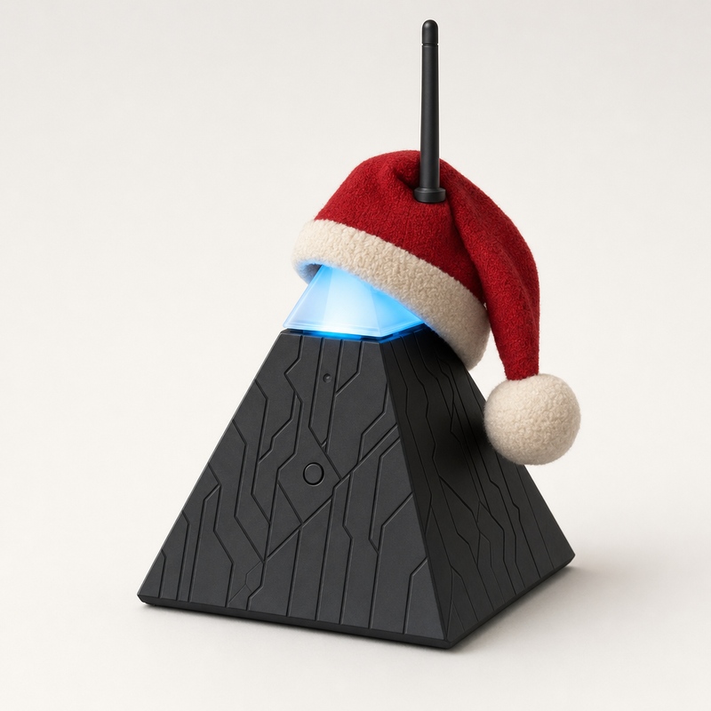<figcaption><b>T5 Antenna</b><span class="sz">Mũ cho chóp đáy 35 mm, cao ~30–45 mm</span><span>Ăng-ten router đen cắm thẳng lên trên mũ</span><span class="flaw">Lỗi ảnh: tạo lại 1 lần vì lần đầu ăng-ten trông như con chim</span></figcaption></figure>
<figure>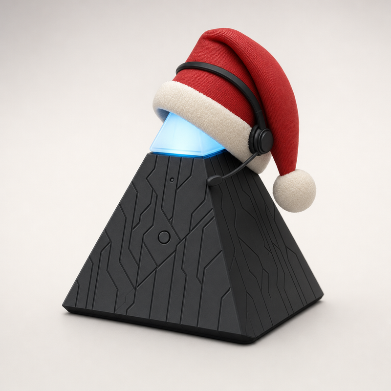<figcaption><b>T6 Headset Santa</b><span class="sz">Mũ cho chóp đáy 35 mm, cao ~30–45 mm</span><span>Mũ Noel đeo tai nghe có mic, như trợ lý trực tổng đài (Intern là trợ lý giọng nói)</span></figcaption></figure>
<figure>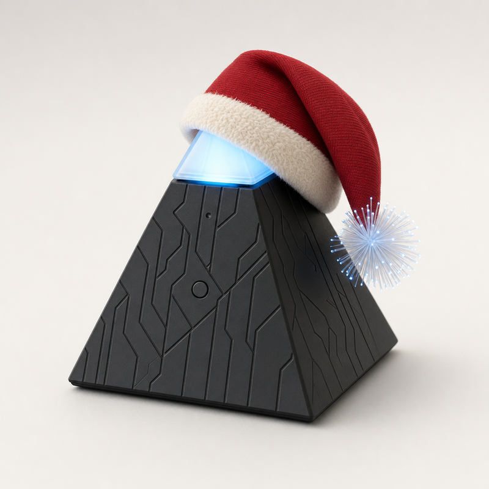<figcaption><b>T7 Fiber-Optic Pompom</b><span class="sz">Mũ cho chóp đáy 35 mm, cao ~30–45 mm</span><span>Quả bông là chùm sợi quang, đầu sợi sáng xanh</span><span class="flaw">Lỗi ảnh: sợi quang mảnh, khó in bằng PLA</span></figcaption></figure>
<figure>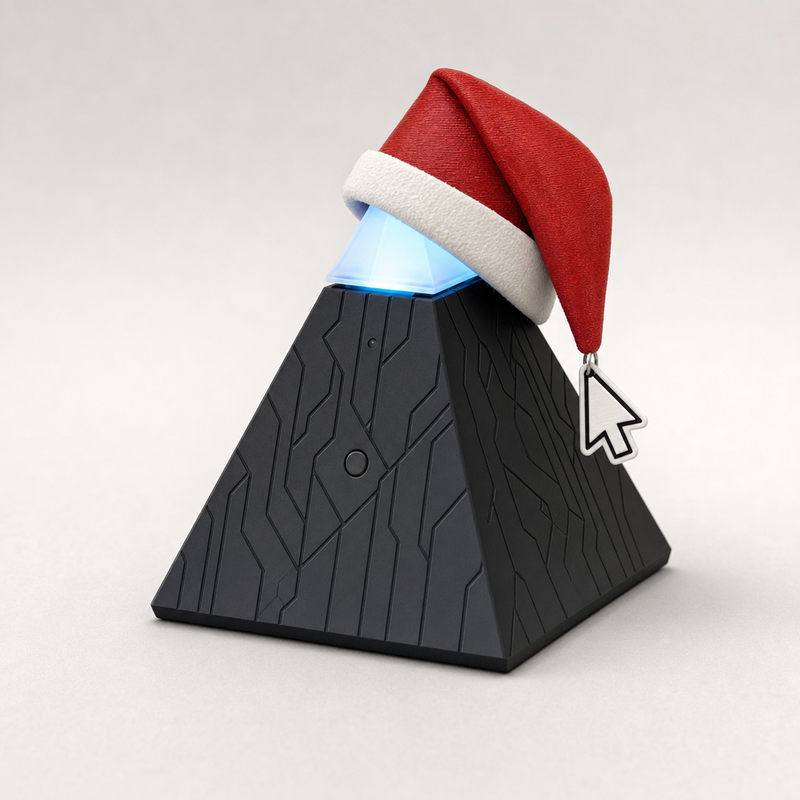<figcaption><b>T8 Cursor Charm</b><span class="sz">Mũ cho chóp đáy 35 mm, cao ~30–45 mm</span><span>Đuôi mũ treo con trỏ chuột thay cho quả bông</span></figcaption></figure>
</div></section>
<section><h2>Vòng 3: ống khói <small>F1–F8</small></h2><div class="grid">
<figure>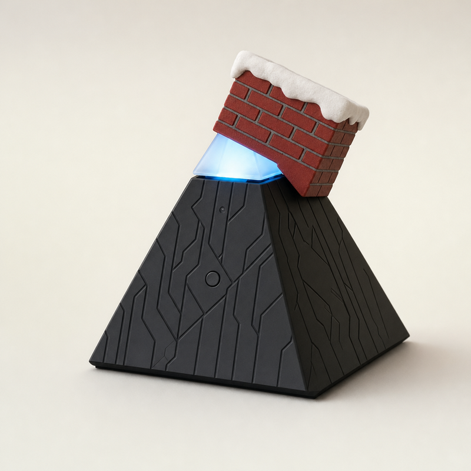<figcaption><b>F1 Brick Chimney</b><span class="sz">Mũ cho chóp đáy 35 mm, cao ~30–45 mm</span><span>Ống khói gạch đỏ có tuyết trên miệng, đội nghiêng như mũ</span></figcaption></figure>
<figure>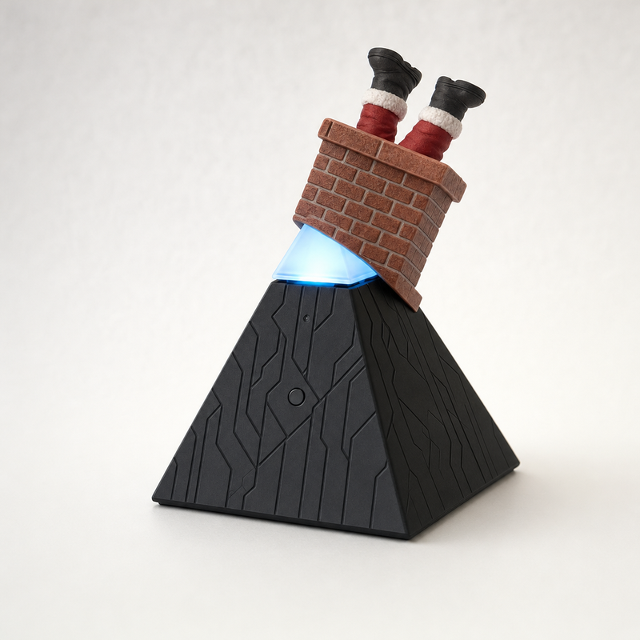<figcaption><b>F2 Santa Stuck</b><span class="sz">Mũ cho chóp đáy 35 mm, cao ~30–45 mm</span><span>Ông già Noel kẹt trong ống khói, chỉ thò hai chân đi ủng lên trên</span></figcaption></figure>
<figure>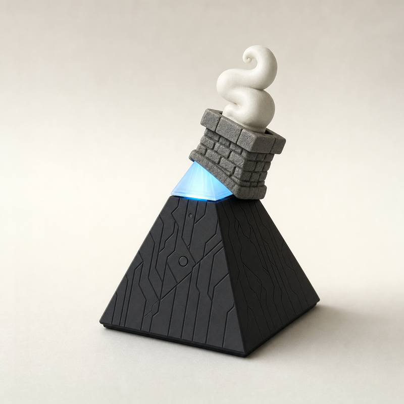<figcaption><b>F3 Smoke Puff</b><span class="sz">Mũ cho chóp đáy 35 mm, cao ~30–45 mm</span><span>Ống khói đá xám với một làn khói trắng xoắn bốc lên</span></figcaption></figure>
<figure>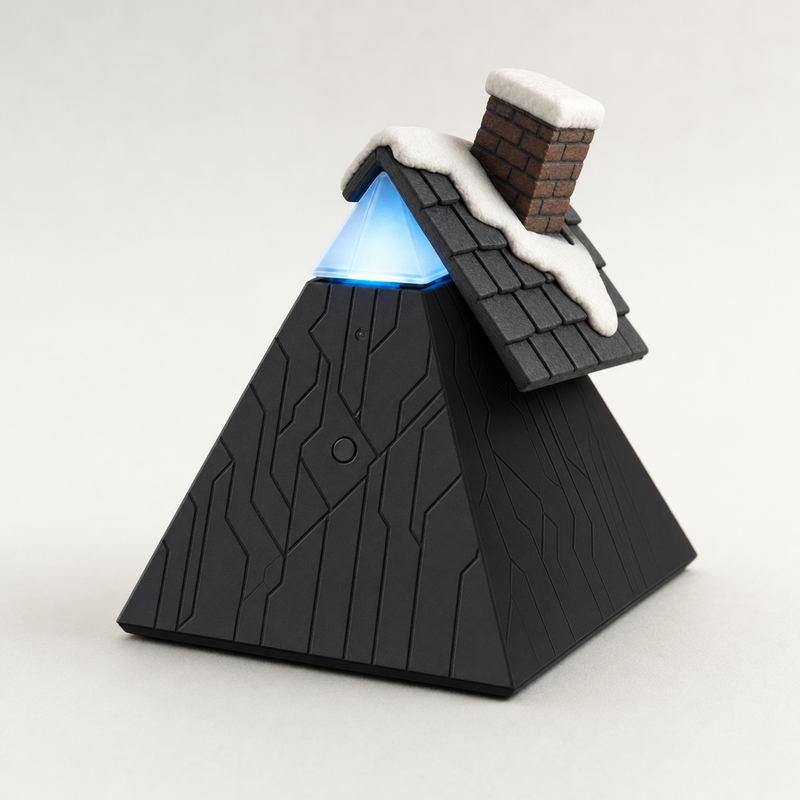<figcaption><b>F4 Rooftop Corner</b><span class="sz">Mũ cho chóp đáy 35 mm, cao ~30–45 mm</span><span>Một góc mái ngói phủ tuyết ôm theo mặt nghiêng của chóp, có ống khói gạch nhỏ</span></figcaption></figure>
<figure>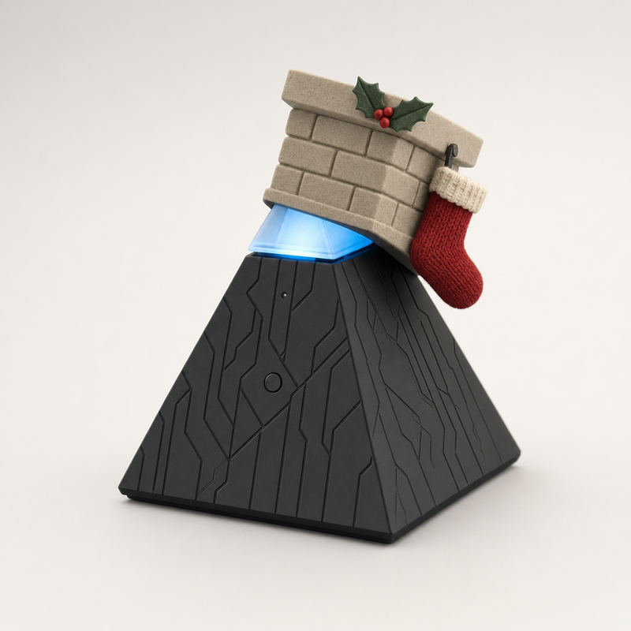<figcaption><b>F5 Stocking Chimney</b><span class="sz">Mũ cho chóp đáy 35 mm, cao ~30–45 mm</span><span>Ống khói đá kem treo chiếc tất Noel đỏ, có nhánh nhựa ruồi</span></figcaption></figure>
<figure>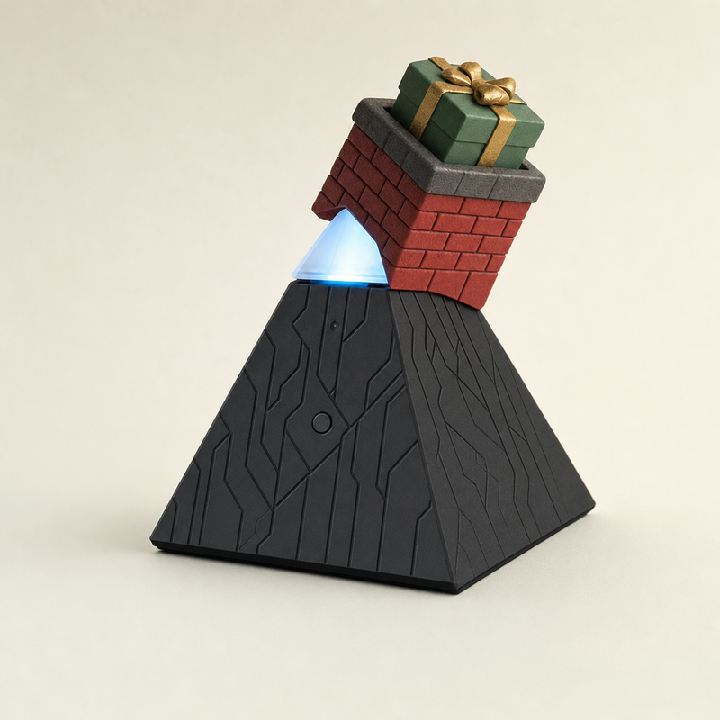<figcaption><b>F6 Gift Delivery</b><span class="sz">Mũ cho chóp đáy 35 mm, cao ~30–45 mm</span><span>Ống khói gạch với hộp quà đang thả dở xuống miệng</span></figcaption></figure>
<figure>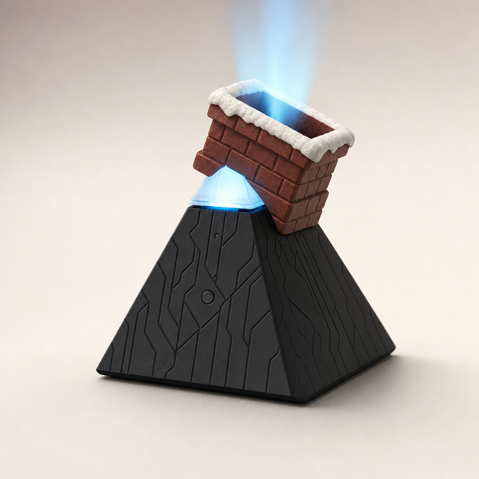<figcaption><b>F7 Beacon Chimney</b><span class="sz">Mũ cho chóp đáy 35 mm, cao ~30–45 mm</span><span>Ống khói rỗng, ánh đèn xanh từ chóp hắt lên qua miệng ống</span><span class="flaw">Lỗi ảnh: luồng sáng bốc lên là hiệu ứng ảnh; thực tế chỉ thấy miệng ống sáng</span></figcaption></figure>
<figure class="chosen">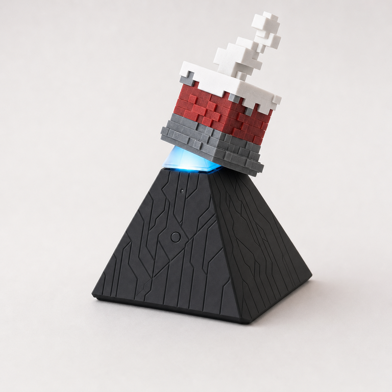<figcaption><span class="rec">Đã chọn</span><b>F8 Pixel Chimney</b><span class="sz">Mũ cho chóp đáy 35 mm, cao ~30–45 mm</span><span>Ống khói gạch pixel 8-bit với khói pixel bậc thang</span><span class="flaw">Ảnh đã tạo lại để ống khói trùm lên đỉnh chóp; giờ đội gần như thẳng, ít nghiêng</span></figcaption></figure>
</div></section>
<section><h2>Vòng 2: nhiều màu hơn <small>M1–M8</small></h2><div class="grid">
<figure>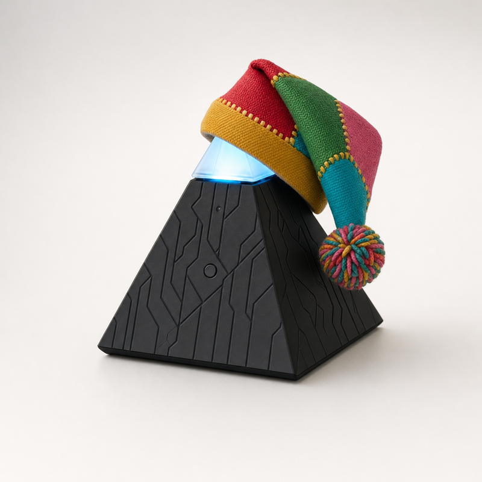<figcaption><b>M1 Patchwork Santa</b><span class="sz">Mũ cho chóp đáy 35 mm, cao ~30–45 mm</span><span>Mũ Noel ghép mảnh đỏ, xanh lá, vàng, xanh ngọc, hồng; quả bông len nhiều màu</span><span class="flaw">Lỗi ảnh: trông như vải, in PLA sẽ thành vỏ cứng</span></figcaption></figure>
<figure>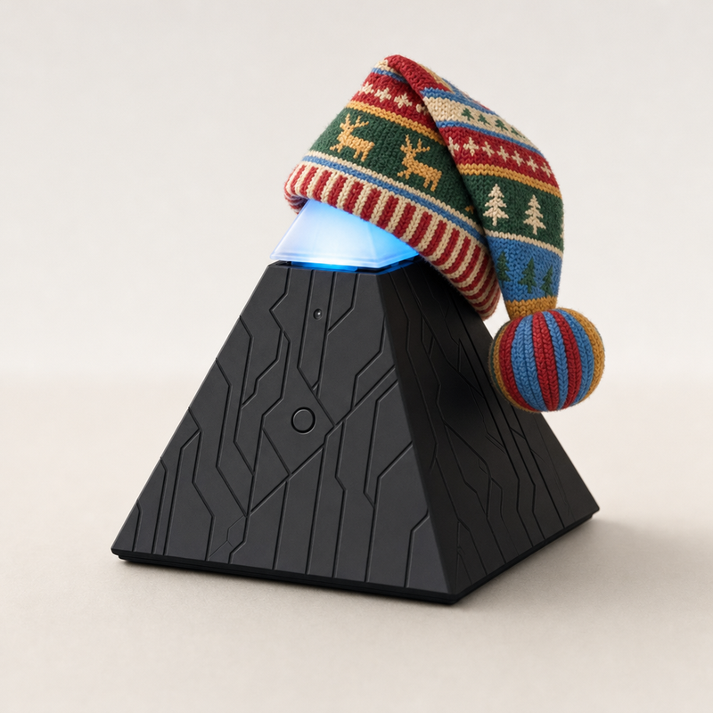<figcaption><b>M2 Fair-Isle Knit</b><span class="sz">Mũ cho chóp đáy 35 mm, cao ~30–45 mm</span><span>Mũ len sọc ngang đỏ, xanh, kem, vàng với hoạ tiết tuần lộc và cây thông</span><span class="flaw">Lỗi ảnh: trông như len, in PLA sẽ thành vỏ cứng</span></figcaption></figure>
<figure>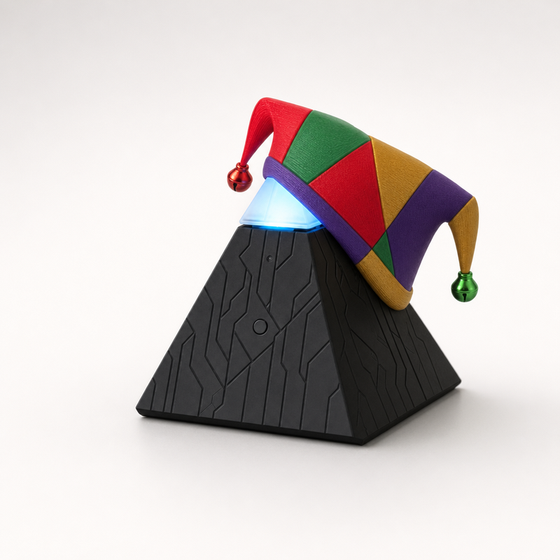<figcaption><b>M3 Harlequin Elf</b><span class="sz">Mũ cho chóp đáy 35 mm, cao ~30–45 mm</span><span>Mũ hai chóp ghép ô đỏ, xanh, vàng, tím, mỗi chóp có chuông</span><span class="flaw">Lỗi ảnh: giống mũ hề nhiều hơn mũ Noel</span></figcaption></figure>
<figure>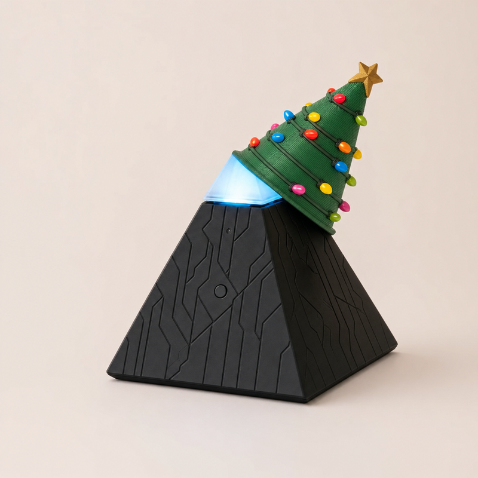<figcaption><b>M4 Fairy-Light Hat</b><span class="sz">Mũ cho chóp đáy 35 mm, cao ~30–45 mm</span><span>Mũ xanh thông quấn dây đèn bóng nhỏ nhiều màu, ngôi sao vàng trên đỉnh</span><span class="flaw">Lỗi ảnh: tạo lại 1 lần vì lần đầu che gần hết đèn</span></figcaption></figure>
<figure>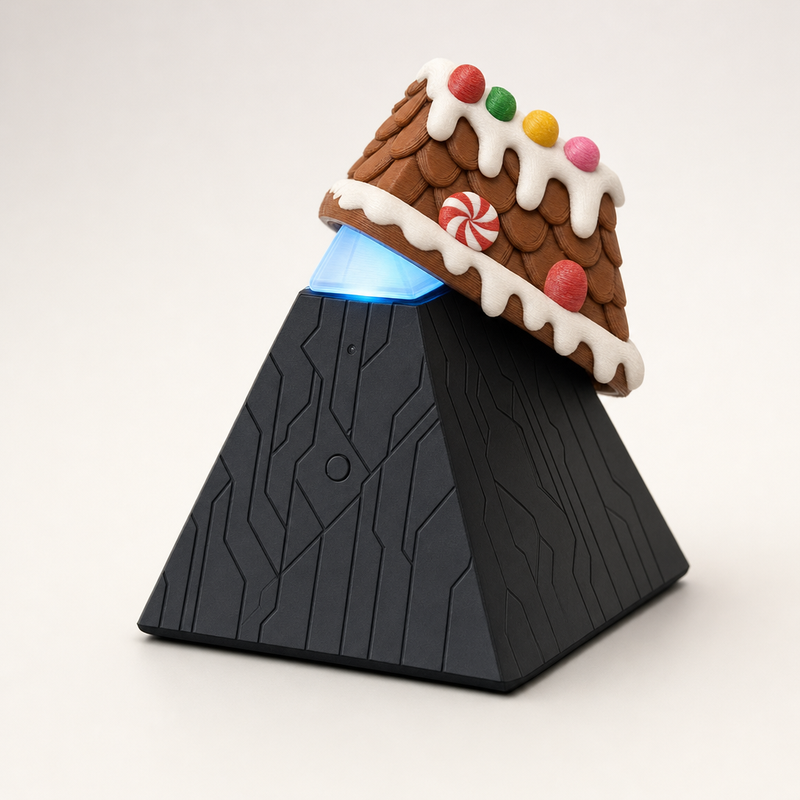<figcaption><b>M5 Gingerbread Roof</b><span class="sz">Mũ cho chóp đáy 35 mm, cao ~30–45 mm</span><span>Mái nhà bánh gừng, kem trắng chảy, kẹo dẻo màu và kẹo bạc hà</span><span class="flaw">Lỗi ảnh: che phần lớn chóp, đèn chỉ lộ ở mép dưới</span></figcaption></figure>
<figure>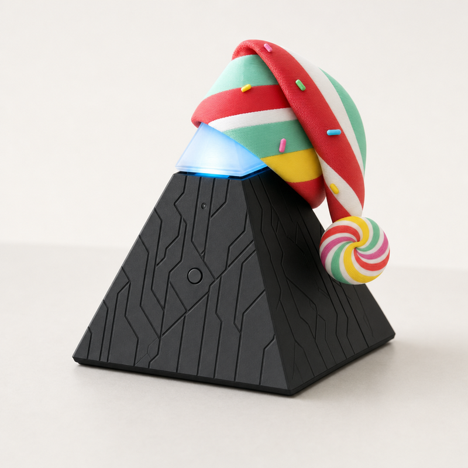<figcaption><b>M6 Candy Shop</b><span class="sz">Mũ cho chóp đáy 35 mm, cao ~30–45 mm</span><span>Mũ sọc xoắn đỏ, xanh bạc hà, trắng, vàng chanh; quả bông là kẹo mút xoắn</span></figcaption></figure>
<figure>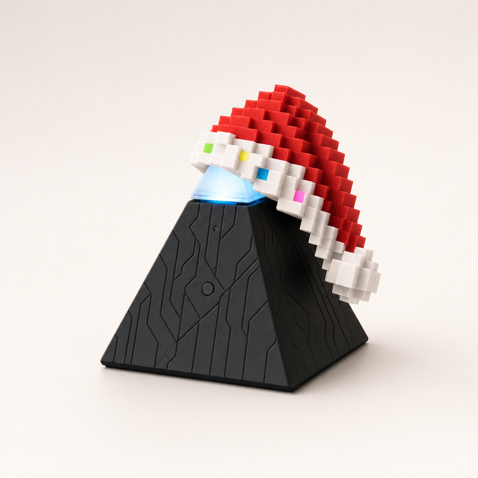<figcaption><b>M7 Pixel Lights</b><span class="sz">Mũ cho chóp đáy 35 mm, cao ~30–45 mm</span><span>Mũ Noel pixel 8-bit, viền trắng điểm các pixel đèn nhiều màu</span><span class="flaw">Lỗi ảnh: đèn màu trên viền khá nhỏ</span></figcaption></figure>
<figure>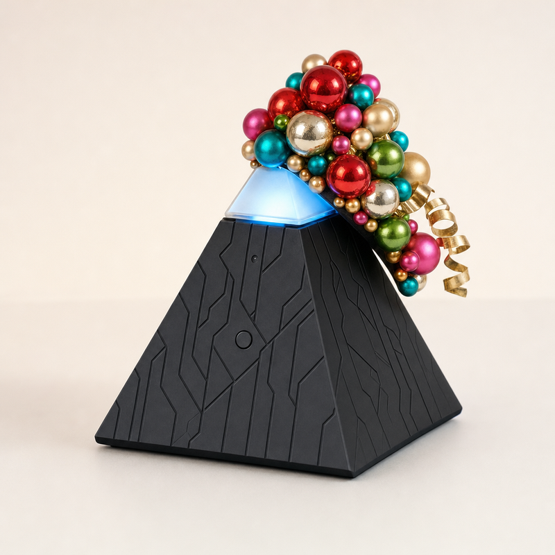<figcaption><b>M8 Bauble Cluster</b><span class="sz">Mũ cho chóp đáy 35 mm, cao ~30–45 mm</span><span>Mũ kết từ chùm quả châu nhỏ đỏ, vàng, xanh ngọc, hồng, bạc, ruy băng xoăn</span><span class="flaw">Lỗi ảnh: khối nhiều chi tiết nhỏ, khó in</span></figcaption></figure>
</div></section>
<section><h2>Vòng 1 <small>H1–H8</small></h2><div class="grid">
<figure>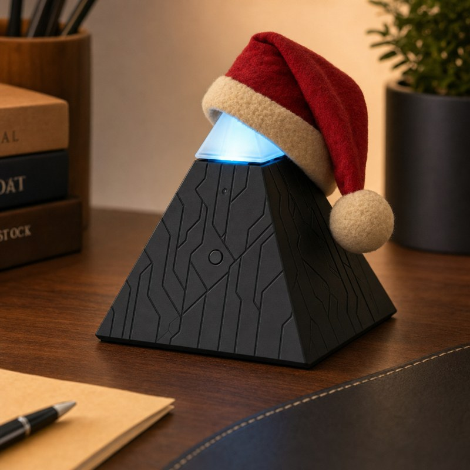<figcaption><b>H1 Santa Slouch</b><span class="sz">Mũ cho chóp đáy 35 mm, cao ~30–45 mm</span><span>Mũ Noel đỏ viền kem, quả bông tựa xuống thân</span></figcaption></figure>
<figure>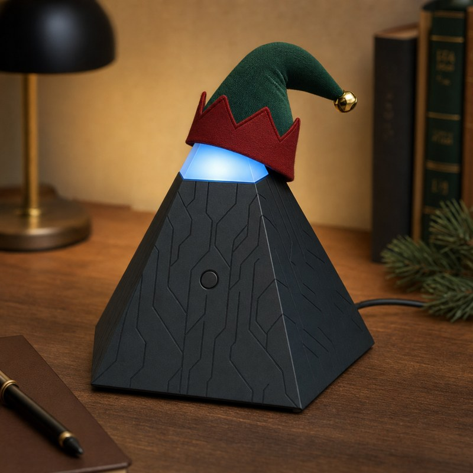<figcaption><b>H2 Elf Cap</b><span class="sz">Mũ cho chóp đáy 35 mm, cao ~30–45 mm</span><span>Mũ yêu tinh xanh, viền đỏ răng cưa, chuông vàng</span></figcaption></figure>
<figure>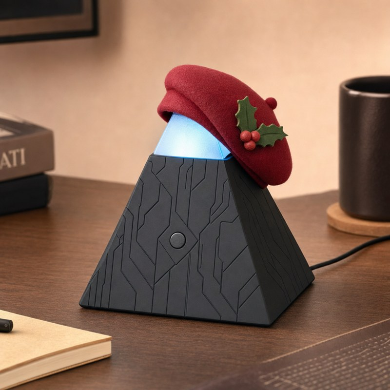<figcaption><b>H3 Holly Beret</b><span class="sz">Mũ cho chóp đáy 35 mm, cao ~30–45 mm</span><span>Mũ nồi đỏ đội nghiêng, cài nhánh nhựa ruồi</span></figcaption></figure>
<figure>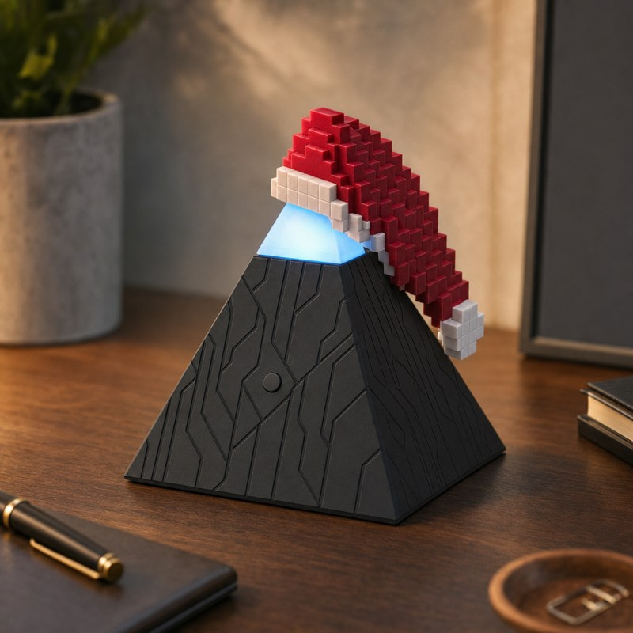<figcaption><b>H4 Pixel Santa Hat</b><span class="sz">Mũ cho chóp đáy 35 mm, cao ~30–45 mm</span><span>Mũ Noel pixel 8-bit, cùng bộ với Pixel Tree Key</span></figcaption></figure>
<figure>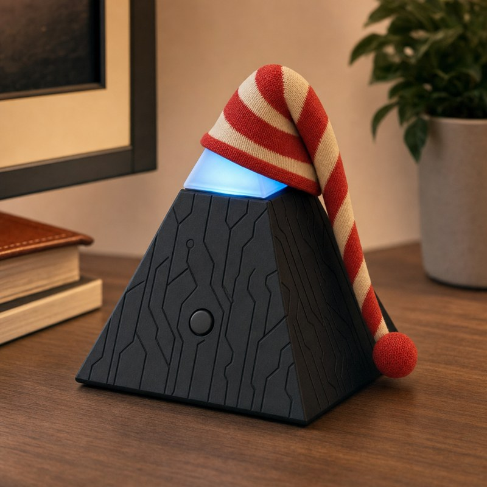<figcaption><b>H5 Candy-Cane Stocking</b><span class="sz">Mũ cho chóp đáy 35 mm, cao ~30–45 mm</span><span>Mũ dài sọc đỏ kem, đuôi chạy dọc cạnh thân</span></figcaption></figure>
<figure class="chosen">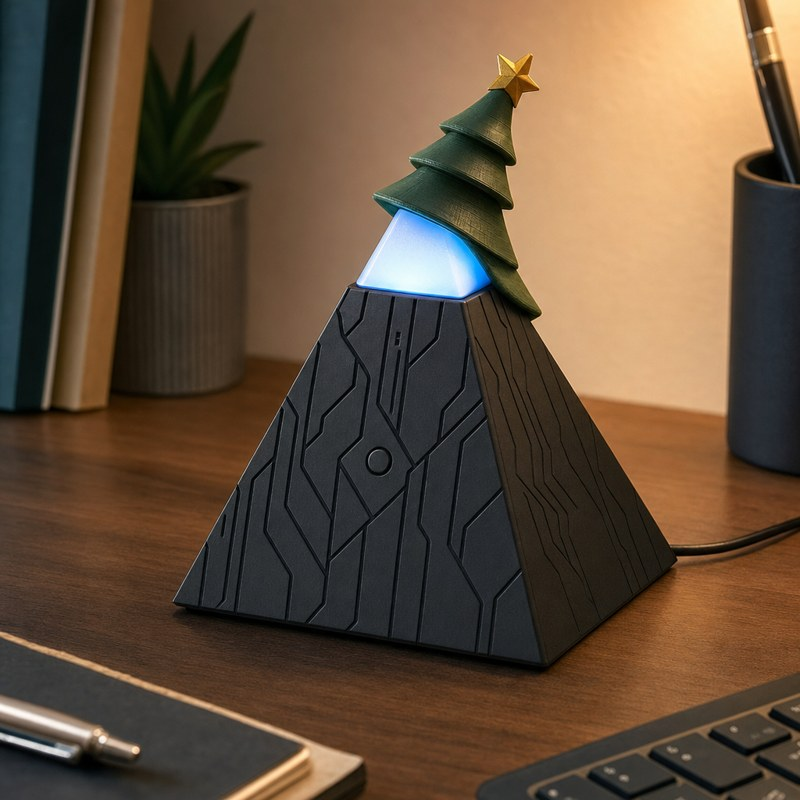<figcaption><span class="rec">Đã chọn</span><b>H6 Tree Cone</b><span class="sz">Mũ cho chóp đáy 35 mm, cao ~30–45 mm</span><span>Mũ hình cây thông 3 tầng, sao vàng</span></figcaption></figure>
<figure class="chosen">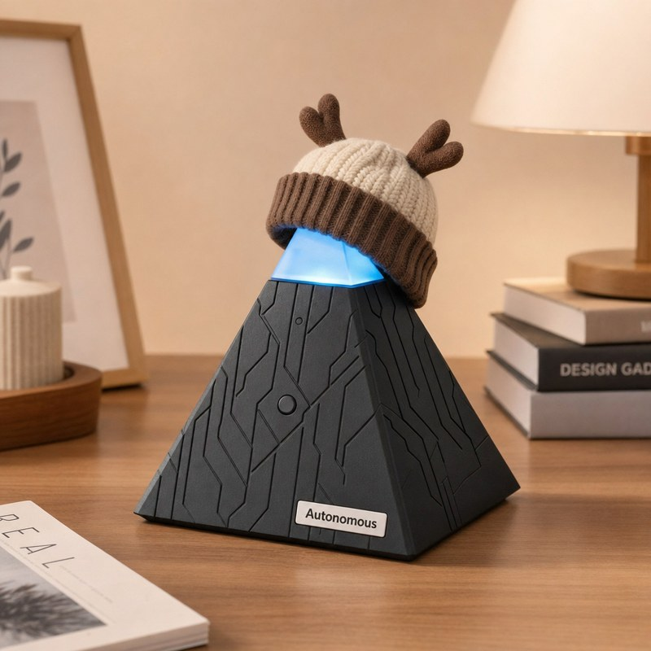<figcaption><span class="rec">Đã chọn</span><b>H7 Antler Beanie</b><span class="sz">Mũ cho chóp đáy 35 mm, cao ~30–45 mm</span><span>Mũ len có gạc tuần lộc nhỏ</span><span class="flaw">Lỗi ảnh: đội gần như thẳng, không lệch</span></figcaption></figure>
<figure>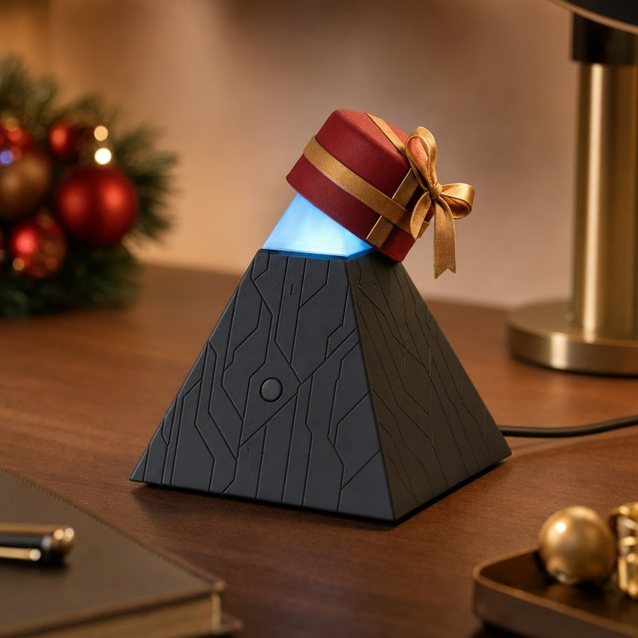<figcaption><b>H8 Gift Bow Cap</b><span class="sz">Mũ cho chóp đáy 35 mm, cao ~30–45 mm</span><span>Mũ đỏ ngắn quấn ruy băng vàng có nơ</span></figcaption></figure>
</div></section></main>
